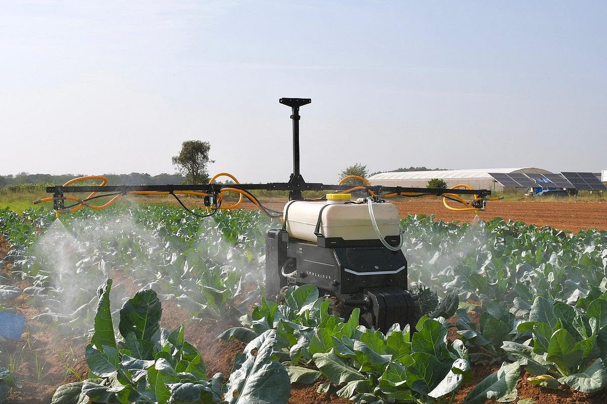
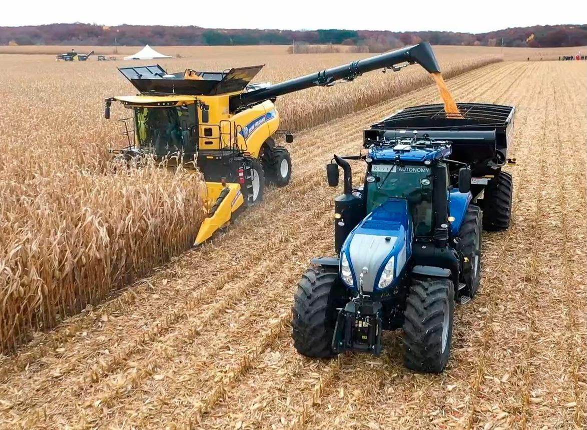
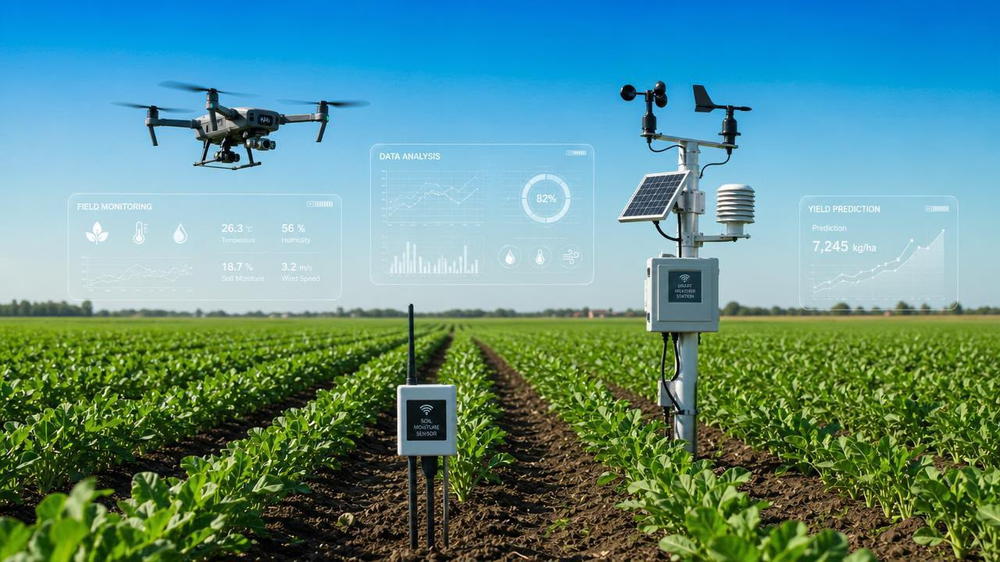
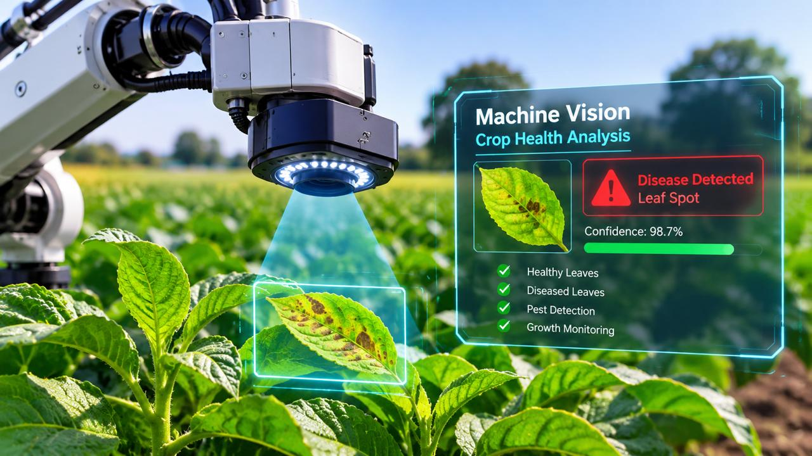
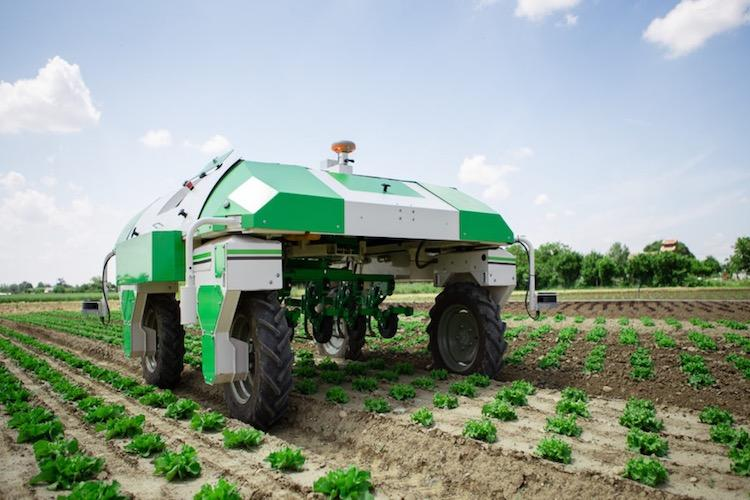
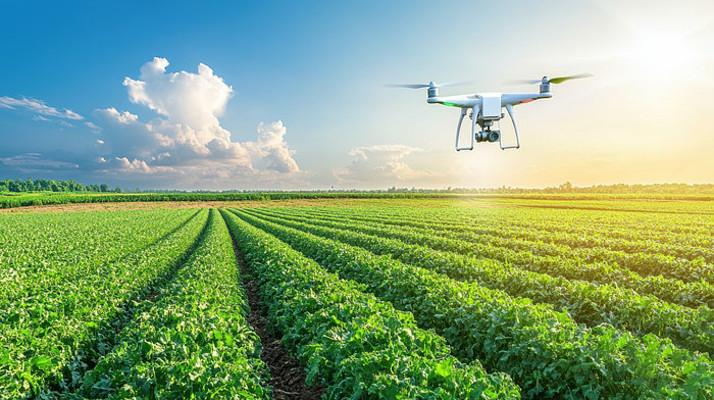
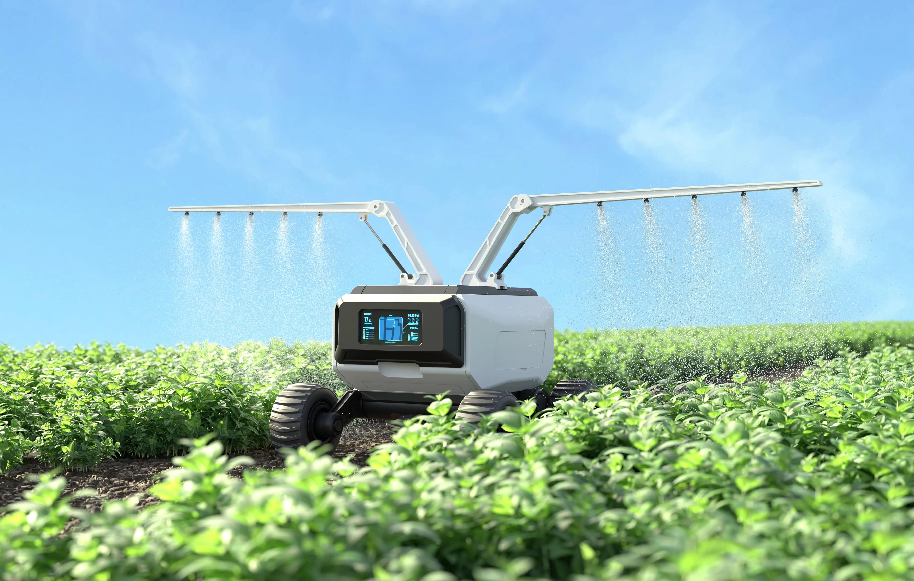

Agricultural Robotics
Design and development of intelligent robotic systems to perform agricultural operations efficiently and accurately.
INDIAN INSTITUTE OF TECHNOLOGY KHARAGPUR
Welcome to the Agri-Robotic Machines Laboratory. We develop intelligent agricultural machines, robotic systems, and automation technologies for sustainable and efficient farming.
The Agri-Robotic Machines Laboratory focuses on developing intelligent robotic systems and advanced agricultural machinery to improve farming efficiency, productivity, and sustainability.
The Agri-Robotic Machines Laboratory focuses on developing intelligent robotic machines and automation technologies for modern agriculture.
Our research explores autonomous navigation, precision farming, agricultural sensing, machine vision, and smart agricultural equipment. We aim to develop practical technologies that improve agricultural productivity and efficiency.
To transform agriculture through innovative robotics, automation, and smart technologies.
To design and develop intelligent agricultural machines that support farmers and modern farming.
To research autonomous machines, precision agriculture, smart sensors, and robotic systems.
WHAT WE EXPLORE

Design and development of intelligent robotic systems to perform agricultural operations efficiently and accurately.

Research on autonomous navigation, intelligent control, and advanced agricultural machine systems.

Using sensors, data analysis, and automation technologies to support efficient farming practices.

Applying computer vision and image processing for crop monitoring, detection, and field analysis.
OUR TECHNOLOGY

A robotic platform designed for automated agricultural field operations and intelligent navigation.

Drone technology for crop monitoring, field observation, and agricultural data collection.

Intelligent spraying technology designed for accurate and efficient agricultural applications.
OUR RESEARCH
Organization: LAND OPTIMIZER INTERNATIONAL PRIVATE LIMITED
Organization: TRICKSHOT SOLUTIONS PRIVATE LIMITED
Organization: ICAR
Organization: The Director of Horticulture Department of Food Processing Industries and Horticulture
Organization: Department of Science and Technology (DST)
Area of Research: Path Planning Optimization for Agricultural Applications
Area of Research: Data Driven Precision Agriculture
Area of Research: Robotic Harvester under Controlled Environment
Area of Research: AI enabled Drone Assisted Crop Sprayer
Area of Research: Not specified
Area of Research: Automation and Mechanization in Precision Agriculture
Area of Research: Computer Vision and Machine Learning Applications for Crop Maturity Determination
Area of Research: Design and Development of Agricultural Machines
Area of Research: Food Process Engineering
Area of Research: Agri-Robotics in Precision Agriculture
Area of Research: Agri-UAVs in Precision Agriculture
Area of Research: Agricultural Machinery
Area of Research: Solar Energy Operated Equipment for Horticultural Crops
Thesis Title: Remotely Operated Fully Automatic Smart Mango Harvester
Area of Research: Food Process Engineering
Thesis Title: Automation of Crack Detection and Grading of Chicken Eggs Using Computer Vision and Robotics
Area of Research: Precision Agriculture and Farm Mechanization
Thesis Title: Development of An Electronically Controlled Precision Planter (E-Planter) for Cotton Crop
Area of Research: Precision Agriculture
Thesis Title: Design and Development of a Self-Propelled Chili Pepper Harvester
Area of Research: Artificial Intelligence Applications in Agricultural Mechanisation
Thesis Title: An AI-IoT Based Real-Time Tractor Engine and Field Performance Monitoring cum Advisory System for Optimum Tillage
Area of Research: Aquaculture Equipment Development
Thesis Title: Development of a Small-scale Fish Filleting Machine for Rohu (Labeo rohita) Fish
Area of Research: Energy from biofuels
Thesis Title: Cerium Oxide Nanoparticles Added Water Emulsified Mahua Biodiesel Blend and its Performance in Diesel Engine
Area of Research: Aeration System
Thesis Title: Development of an Efficient Perforated Pooled Circular Stepped Cascade (PPCSC) Aeration System for Sustainable Aquaculture
Area of Research: Design and Development of Agricultural Machines
Thesis Title: Design and Development of a Fully Automatic Paddy Seedling Mat Preparing Machine
Area of Research: Computer aided design of Agricultural Machines
Thesis Title: Design and Development of a Robotic Arm Gripper for Transplanting Tomato Seedlings
DAILY AGRICULTURE UPDATES
Loading the latest agriculture news...
MEET OUR FACULTY
FACULTY MEMBER
Agricultural and Food Engineering
Institution: Indian Institute of Technology Kharagpur
Email: rajendra@agfe.iitkgp.ac.in
CAREER JOURNEY
Agricultural and Food Engineering Department
Assistant Professor | July 2016 – PresentAgricultural and Food Engineering Department
Visiting Faculty | October 2014 – July 2016Department of Mechanical Engineering
Assistant Professor | June 2014 – October 2014Department of Mechanical Engineering
Pre-Post Doctoral Fellow | April 2014 – June 2014Department of Mechanical Engineering
Research Scholar | December 2009 – April 2014Research and Development (R&D) Member
June 2008 – April 2010AREAS OF SPECIALIZATION
Machine design and design optimization for engineering applications.
Application of artificial intelligence and neural networks.
Structural damage identification and condition monitoring.
Renewable-energy-operated agricultural machinery.
RESEARCH CONTRIBUTIONS
1. Improved Complex-valued Radial Basis Function (ICRBF) neural networks on multiple crack identification.
Applied Soft Computing, 20152. Prediction of particle damping parameters using RBF neural network.
Procedia Materials Science, 20143. System identification of a composite plate using hybrid response surface methodology and particle swarm optimization in time domain.
Measurement, 20144. Damage identification of multimember structure using improved neural networks.
International Journal of Manufacturing, Materials, and Mechanical Engineering, 20135. Biodiesel production from mixture of mahua and simarouba oils with high free fatty acids.
Biomass and Bioenergy, 20106. Predicting the draught requirement of tillage implements in sandy clay loam soil using an artificial neural network.
Biosystems Engineering, 2009GET IN TOUCH
Total Visitors
0